Mcp Agent Security Gateway
Readable overview and detailed source-mapped architecture. Select a diagram, zoom in and drag to inspect it. Use the full-size SVG link for a separate scalable view.
The notebook is a guided synthetic engine demonstration. It computes results in your own CPU session. This static architecture page has no backend, API key, analytics or paid service. The full local application has separate prerequisites and release limitations.
Keyboard: focus the diagram, use + / − to zoom and 0 to reset. Drag to pan.

Security boundaries, missing controls and verification scope are described in the linked architecture document. A diagram is not production approval.